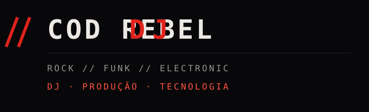

// Sobre · identidade do projeto
Eu sou o Cod Rebel DJ
Meu projeto nasceu da vontade de misturar coisas que sempre fizeram parte da minha relação com música: Rock, Funk, música eletrônica, cultura urbana, tecnologia e aquela vontade de fazer algo que não pareça igual a todo mundo.
Não me interessa ficar preso em um gênero. Meu som pode passar por uma guitarra de Nu Metal, cair em um grave de Funk, entrar em uma batida Automotiva e terminar em uma textura Industrial.
// O que eu toco
// Referências
Mais a estética dos anos 2000, cultura underground, games, internet e música pesada — tudo isso influenciou a forma de enxergar música.
// Método
Como eu penso um DJ set
Para mim, tocar não é simplesmente colocar uma música atrás da outra. Um set precisa ter energia, dinâmica e espaço para improviso.
Gosto de pensar no que está acontecendo na pista e adaptar o que preparei para o momento. Por isso, além das músicas principais, procuro sempre ter alternativas, músicas coringa e caminhos diferentes para o set.
Às vezes a melhor transição é exatamente aquela que não estava planejada.
Meu objetivo é fazer o público pensar: “que porra foi essa?”
E, dois segundos depois: “mas funcionou.”
// Na prática
- Músicas coringa para mudar a direção do set;
- Alternativas além do tempo previsto de show;
- Organização que permita achar uma saída rápida;
- Leitura de pista acima do roteiro.
Extraído de docs/aprendizados.md.
// Estética
Minha identidade
A estética do Cod Rebel DJ mistura Rock, Funk, Industrial, tecnologia e cultura digital: um pouco de cyberpunk, um pouco de underground, um pouco de internet e bastante coisa que eu simplesmente gosto.
Não quero construir uma imagem de DJ genérico nem parecer uma versão brasileira de algum artista estrangeiro. Quero que seja possível olhar para um set, uma arte ou uma apresentação e reconhecer: isso tem a cara do Cod Rebel.
// Além dos sets
Laboratório criativo
Também estou desenvolvendo ideias musicais próprias: algumas voltadas para Rock Funk Industrial, outras para uma abordagem mais eletrônica, pesada e experimental.
Nada disso foi lançado oficialmente. Por enquanto são ideias em teste — algumas podem virar singles, outras podem virar projetos maiores, outras podem nunca sair. O laboratório fica registrado no documento de projetos.
// Direção
Onde quero chegar
Estou construindo o Cod Rebel DJ como uma carreira artística de verdade. Quero tocar em casas de show, eventos, festivais, eventos automotivos, festas temáticas e dividir espaço com bandas, DJs e outros artistas.
Também quero desenvolver apresentações que vão além do DJ set tradicional, trabalhando com performance, música própria, remixes e colaborações.
Não estou tentando fazer tudo de uma vez. Estou construindo passo a passo, aprendendo com cada apresentação, cada erro, cada set e cada projeto.

// Em uma frase
Rock para bater.
Funk para dançar.
Industrial para pesar.
Tecnologia para experimentar.
A trajetória completa, com datas e registros, está no documento de trajetória — ainda em preenchimento, como o resto do projeto.